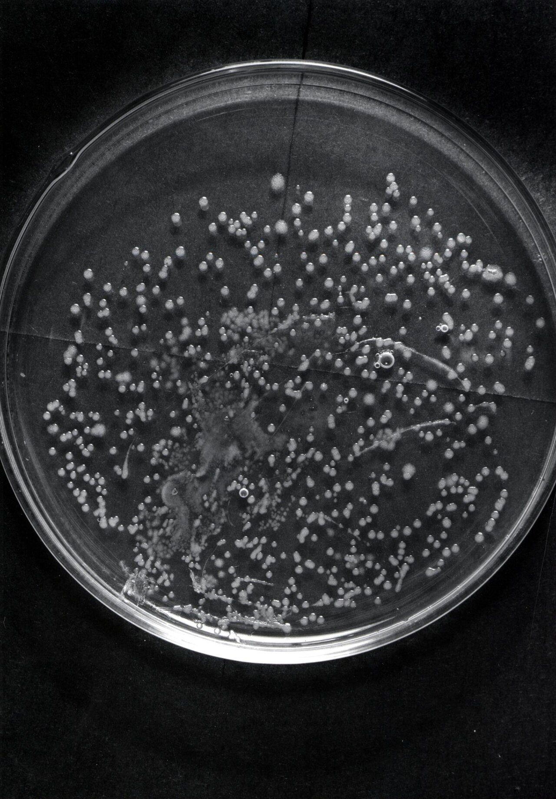

微生物的培养技术（下）：选择培养和计数
本期导读
微生物的培养技术（下） · 选择培养基 · 涂布计数

视频原话 · 导读3 句
- 同学们好！这节课梳理人教版选择性必修三第一章第二节的下半部分——微生物的选择培养和计数。9.5s
- 高考常考选择培养基的设计、稀释涂布平板法的计数公式和误差，以及对照组的作用。8.2s
- 我们按八个考点梳理，每个考点都讲清楚怎么考、怎么做。5.5s
选择培养基01#
选择培养基：允许特定种类的微生物生长，同时抑制或阻止其他种类微生物生长
| 培养基的设计 | 筛选出的微生物 | 原理 |
|---|---|---|
| 以尿素为唯一氮源 | 分解尿素的细菌 | 只有它能利用尿素中的氮 |
| 加入青霉素 | 酵母菌、霉菌等真菌 | 青霉素抑制细菌 |
| 不加氮源 | 固氮微生物 | 只有它能利用空气中的氮气 |
解题方法
抓住目的菌独有的能力：把相应物质设为唯一碳源或唯一氮源，或加入只抑制杂菌的物质
视频原话5 句
- 考点一，选择培养基。它允许特定种类的微生物生长，同时抑制或阻止其他种类微生物生长。9.4s
- 以尿素为唯一氮源，只有能分解尿素的微生物才能生长。5.5s
- 加入青霉素，可以抑制细菌，从而筛选出酵母菌、霉菌等真菌。6.1s
- 不加氮源的培养基，可以筛选出固氮微生物。4.3s
- 解题方法：设计选择培养基，抓住目的菌独有的能力，把相应物质设为唯一碳源或唯一氮源。9.3s
分离尿素分解菌02#
尿素
脲酶→
氨
培养基以尿素为唯一氮源 → 其他微生物缺少氮源，不能生长
取土样
→
样品稀释
→
涂布平板
→
培养
→
观察计数
易错
培养基中不能再加牛肉膏、蛋白胨等含氮物质，否则其他微生物也能生长，失去选择作用
视频原话4 句
- 考点二，土壤中分解尿素的细菌的分离与计数。这类细菌能合成脲酶，把尿素分解成氨。9.0s
- 所以培养基要以尿素为唯一氮源，其他微生物因为缺少氮源而不能生长。7.6s
- 实验步骤：取土样、样品稀释、涂布平板、培养、观察计数。6.6s
- 易错：培养基中不能再加牛肉膏、蛋白胨这类含氮的物质，否则就失去了选择作用。8.0s
稀释涂布平板法03#
易错
涂布器是引燃酒精，不是灼烧到烧红；涂布法能分离又能计数，平板划线法只能分离
视频原话5 句
- 考点三，稀释涂布平板法。分两步：梯度稀释和涂布平板。6.8s
- 梯度稀释：取 1 mL 菌液，加入 9 mL 无菌水中，就稀释了10倍；依次进行，得到一系列稀释液。10.0s
- 涂布：取 0.1 mL 稀释液滴到平板表面，用涂布器涂布均匀。6.6s
- 涂布器先浸在酒精中，再在火焰上引燃，待酒精燃尽、冷却后再涂布。7.0s
- 易错：涂布器是引燃酒精，不是在火焰上灼烧到烧红；涂布法既能分离，又能计数，平板划线法只能分离。10.6s
菌落计数04#
选菌落数在 30～300 的平板；每个稀释度至少 3 个平板，取平均值
每克样品中的菌株数 =
(C ÷ V) × M
C：平均菌落数 V：涂布体积（mL） M：稀释倍数
平均：(156 + 178 + 191) ÷ 3 = 175
(175 ÷ 0.1) × 105 = 1.75 × 108 个/g
易错
不在 30～300 之间的平板不计；V 以 mL 为单位，涂布 0.1 mL 要除以 0.1，不要漏掉
视频原话4 句
- 考点四，菌落计数。选择菌落数在 30～300 之间的平板计数，每个稀释度至少涂布 3个平板，取平均值。10.8s
- 公式：每克样品中的菌株数 = (C ÷ V) × M。C 是平均菌落数，V 是涂布的体积，M 是稀释倍数。11.3s
- 例如稀释 105 倍，三个平板分别是 156、178、191，平均 175 个，涂布 0.1 mL，结果是 1.75 × 108 个/g。14.7s
- 易错：不在 30～300 之间的平板不计；V 的单位是 mL，0.1 mL 要除，不要漏掉。8.5s
计数结果偏小05#
统计的菌落数 < 实际活菌数
结果用“菌落数”而不是活菌数表示
解题方法
偏小原因的标准答法：当两个或多个细胞连在一起时，平板上观察到的只是一个菌落
视频原话4 句
- 考点五，计数结果为什么偏小。当两个或多个细胞连在一起时，平板上观察到的只是一个菌落。9.2s
- 所以稀释涂布平板法统计的菌落数，往往比活菌的实际数目少。6.3s
- 因此，统计结果一般用菌落数而不是活菌数来表示。5.4s
- 考法：问结果偏小的原因。解题方法：标准答案就一句——两个或多个细胞连在一起时，只能形成一个菌落。10.4s
显微镜直接计数06#
| 比较项目 | 显微镜直接计数法 | 稀释涂布平板法 |
|---|---|---|
| 工具 | 细菌计数板或血细胞计数板 | 固体培养基平板 |
| 统计对象 | 活菌 + 死菌 | 只统计活菌 |
| 结果 | 偏大 | 偏小 |
| 特点 | 快速、直接 | 需要培养，耗时较长 |
解题方法
显微镜分不清死活，所以偏大；平板计数因细胞连在一起只长一个菌落，所以偏小
视频原话4 句
- 考点六，显微镜直接计数法。利用特定的细菌计数板或血细胞计数板，在显微镜下计数。9.1s
- 它统计的是活菌和死菌的总和，所以结果往往比实际的活菌数偏大。6.5s
- 稀释涂布平板法只统计活菌，结果偏小，但需要培养，耗时较长。6.9s
- 考法：比较两种方法的结果。解题方法：看能不能分辨死活——显微镜分不清死活，所以偏大；平板计数细胞重叠，所以偏小。12.6s
对照的设置07#
解题方法
空白平板看有没有污染（灭菌是否合格）；牛肉膏蛋白胨平板看有没有选择作用
视频原话5 句
- 考点七，对照的设置。第一种：未接种的选择培养基平板，和实验组一起培养。8.2s
- 如果它长出菌落，说明培养基被污染，灭菌不合格，实验结果不可信。6.8s
- 第二种：用同样的土样接种牛肉膏蛋白胨培养基，它几乎能让各种细菌生长。7.5s
- 如果它上面的菌落数明显多于选择培养基，说明选择培养基起到了选择作用。7.3s
- 考法：问对照的目的。解题方法：空白平板看有没有污染，牛肉膏蛋白胨平板看有没有选择作用。10.0s
酚红鉴定08#
以尿素为唯一氮源的培养基 + 酚红指示剂
尿素
脲酶→
氨
→
pH 升高
→
酚红变红
菌落周围出现红色环带 → 初步鉴定为分解尿素的细菌
易错
选择培养基上的菌落不一定都是目的菌，要再用酚红鉴定；酚红指示剂是变红
视频原话4 句
- 考点八，分解尿素的细菌的鉴定。在以尿素为唯一氮源的培养基中加入酚红指示剂。8.4s
- 细菌分解尿素产生氨，使培养基pH升高，酚红指示剂变红。6.3s
- 菌落周围出现红色，就可以初步鉴定这种细菌能分解尿素。6.0s
- 易错：选择培养基上长出的菌落不一定都是目的菌，所以要再用酚红鉴定；酚红是变红，不要记成别的颜色。10.1s
易错速查✓
先自己判断，再点按钮查看对错与解析。
- 1选择培养基上长出的菌落都是目的菌说法错误：还需进一步鉴定（如加酚红）
- 2分离尿素分解菌要以尿素为唯一氮源说法正确。
- 3平板划线法也能用来计数说法错误：计数用稀释涂布平板法
- 4应选菌落数在30～300的平板计数说法正确。
- 5稀释涂布平板法的计数结果往往偏大说法错误：细胞连在一起只形成一个菌落，偏小
- 6尿素分解菌使酚红指示剂变红说法正确。
唯一碳源氮源选菌，30～300个才计数！
视频原话 · 易错速查5 句
- 最后，用六道判断题检验一下。3.6s
- 判断一：选择培养基上长出的都是目的菌？错，还要鉴定。判断二：分离尿素分解菌要以尿素为唯一氮源？对。12.3s
- 判断三：平板划线法也能计数？错，计数用稀释涂布平板法。判断四：选菌落数在30～300的平板计数？对。12.7s
- 判断五：稀释涂布平板法的结果往往偏大？错，偏小。判断六：尿素分解菌使酚红指示剂变红？对。11.8s
- 八个考点串成一条线：唯一碳源氮源选菌，30～300个才计数。我们下期再见！8.1s
图片来源
图片来源：Wikimedia Commons —— USDA Forest Service, Region 6, State & Private Forestry《Colonies of Bt on agar in petri dish》Public domain
Photo: USDA Forest Service, Public domain